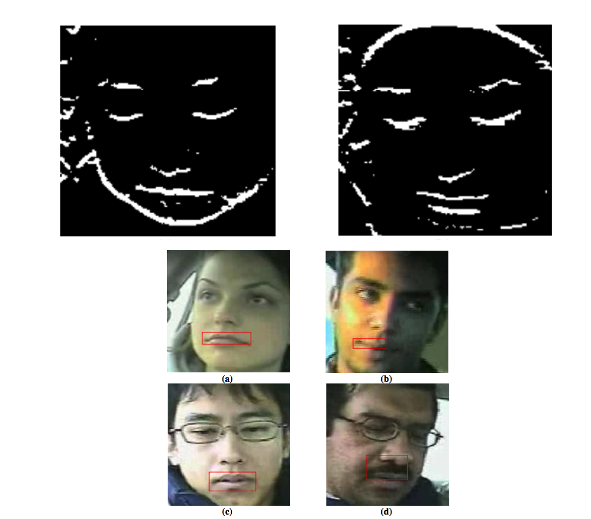

Research Projects
HeatTree: Exploring calling context trees.
Developing techniques to reduce large scale calling context trees using structural similarity and pattern matching. Developing corresponding GUI using QT and OpenGL.

Spatial RANSAC:Correlating multivariate scientific application and hardware domains
Developed algorithm and GUI to explore correlation between multivariate scientific data and hardware counters using RANSAC sub-space clustering and mutual information techniques.
Visualizing Fine-Grained Memory Accesses using Linked Software and Hardware Views.
Developed framework and GUI to link inefficient memory access patterns from the source code to the underlying architecture using functional call graphs.
Relating Memory Performance Data to Application Domain Mesh using an Integration API
We have developed an API for Visit (a visualization and graphical analysis tool for viewing scientificdata) to integrate an external performance profiler or tool. This integration allows the user to leverage the visualization powers of Visit while mapping performance data onto its scientific domain.
Overcoming Keyloggers and Screendumps
Keyloggers (hardware or software) and screendumps of virtual keyboards by the local machine. To counter these attacks, we use DirectX 9 libraries on Windows or Linux operating systems. Our approach uses a remote server that communicates securely with the local process. The Direct X mode that we use executes in the GPU while being directly displayed on the screen. There is no direct communication between the operating system and the GPU storage, which allows us to communicate with the user securely even if the local machine is compromised. We present a simple prototype application of this approach, which supports web browsing.

Domain-Name Generation Algorithm
We implement two domain name generation algorithms using Probabilistic Context Free Grammar (PCFG) and Hidden Markov Model (HMM) to evade detection routines. We compare our DGAs with three popular detection routine Kullback-Leibler (KL) distance, Jaccard Index (JI) and Edit distance (ED) detection techniques.
Security and Performance Evaluation of Security Protocols
We evaluate 'Designed-In-Security' systems implemented for a distributed file system of exascale capacity. Designed-In-Security systems need to be evaluated for its capability to design, develop, and evolve high-assurance software, which is predictable and reliable while managing risk, cost, schedule, quality, and complexity.
Exascale performance file system with integrated security system
We simulate the authentication and authorization systems on a distributed file system to anyalyze the effect on performance with the addition of a security system. Variation of cache sizes and patterns of I/O operations significantly affected the system performance. We also implement and analyze an authentication and authorization prototype, which is a daemon based on Light Weight File System (LWFS), and simulated client and file servers to run performance tests to compare the simulation vs implementation performance difference.

Face Detection and Lip localization in Moving Vehicles
Developed an algorithm to detect lips (following face detection) on low quality images in a moving car environment. Evaluated Viola-Jones algorithm for test cases on lips and non-lips images in several color spaces.